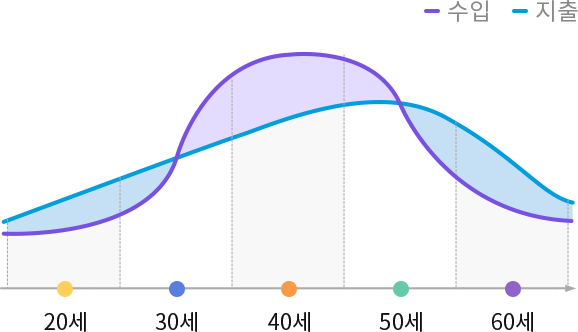

라이프사이클 주기

-
범례 사회초년기사회초년기
20에서 29세까지 수입과 지출이 조금씩 늘어나지만 아직까지는 수입보다 지출이 많습니다.
-
범례 가족형성기가족형성기
30에서 39세까지 수입과 지출이 조금씩 늘어나지만 아직까지는 수입보다 지출이 많습니다.
-
범례 자녀성장기자녀성장기
40에서 49세까지 수입이 지출보다 많은 상태가 지속되지만, 라이프사이클 주기 중 지출이 가장 높은 시기입니다.
-
범례 가족성숙기가족성숙기
50에서 59세까지 수입보다 지출이 점점 많아지게 됩니다.
-
범례 은퇴기은퇴기
60세 이상부터는 추가 수입이 거의 없으며, 전반적으로 지출이 더 많은 시기입니다.